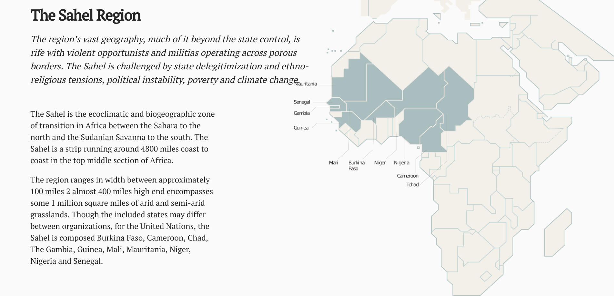
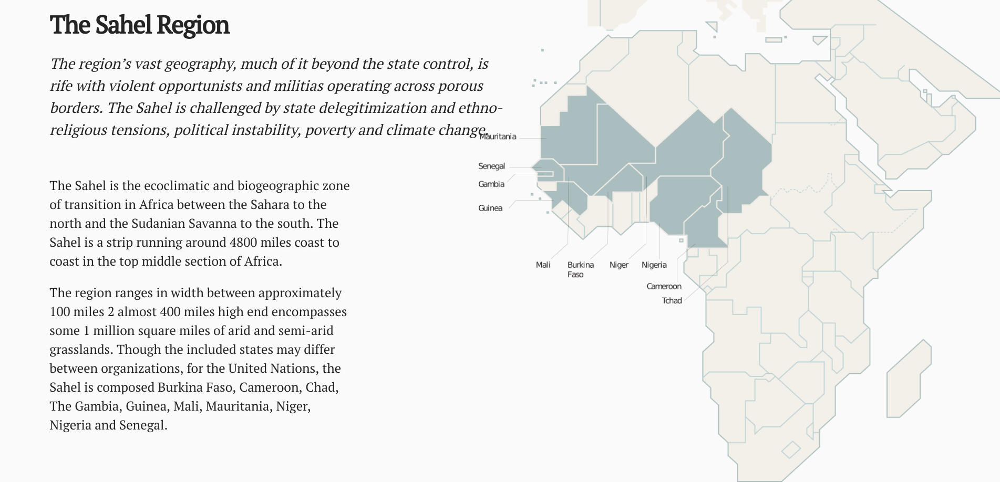

What is the Sahel and why is it considered fragile?
This Title Here


From an ecological perspective Sahel, is a strip running around 4800 miles coast to coast in the top middle section of Africa. The region ranges in width between approximately 100 miles 2 almost 400 miles high end encompasses some 1 million square miles of arid and semi-arid grasslands. a point of clarification, various multilateral organizations may operationalize distinct definitions of what nations constitute the Sahel. As I am featuring the Sustainable Development Goals later in this page, it makes sense to use the definition agreed on by the same stakeholder multilateral organizations. For them, the Sahel is composed of 10 different sovereign states. They include: Burkina Faso, Cameroon, Chad,The Gambia, Guinea, Mali, Mauritania, Niger, Nigeria and Senegal.
Climate
This Western area of the Sahel is largely subject to, and dependent on the rains of the yearly monsoon. The warming of the land encourages the flow a humidity from the ocean and the potential of rain which typically arrives typically between July through August. Many crops although reasonably resilient are still functioning in the upper bounds of their limitations. In this way even small variances in rainfall to have far-ranging effects since it is estimated that 70% of the region relies on the rain to survive. since the 1950s the region has experienced rainfall instability postulated to at least in part be the result of increase climate change precipitating technologies leading to an increase in density of air particulates. in the more than two decades spanning from 1970 to 1993, 20 years of drought were experienced regionally. Since this point the weather has been harder to forecast with what years followed by extremely dry ones making forecasting and agricultural planning extremely difficult.
Climatologists have worried that this instability could lead to a circular chain of events where when the land has less vegetation on it it will reflect more sunlight. This would in turn diminish the temperature difference between the land and the sea and in so doing we can the drawing in of humid are so crucial to a healthy monsoon. Additionally, experts agree that this process has been exacerbated by poor farming techniques, overgrazing, lack of a coherent and regional environmental policy, and deforestation.The situation was made dramatically worse in 2010 when the entire region was affected by a massive heat wave and drought. Temperatures spiked beyond 120F in some towns during this period. As a result crop yields were massively slashed as well as similar numbers for livestock production. Lake Chad a key water reservoir serving populations of more than 20 million people in Cameroon, Chad, Niger, and Nigeria has over the last 40 years seen its water availability shrink by 90%. Due to unsustainable water extraction and the current climate experts suggest the lake is unlikely to ever return to its previous levels without human intervention.
Economies
Closely related to climate is the damaged the monsoon instability had on the Sahel regions employment numbers. across the entire region agriculture is the largest employer. It is estimated to contribute as much as 45% of the GDP of some countries in the region.
Also, between 2007 and 2008 world markets experienced searching food prices as a result of the deprecation of the US dollar, market speculation, and other contributors. The effects of this were disproportionately felt by the world's poor populations. In the Sahara where some countries have household expenditures ranging between 40% and 70% devoted for food purchasing, the effects were severe. By one estimate in Burkina Faso, prices for millet rose 40% between 2007 and 2008. in the aftermath of the price spike, as trading stabilized for much of the first world, prices in much of the developing world including the Sahel remained high regardless.
Politics
As with Mali a reduced capacity to provide services and protections challenged the legitimacy of many states in the Sahel region. Opportunists and terrorists alike leveraged the regional porosity of borders which the United Nations Office for Drugs and Crime reports has generated 3.8 billion annually throughout the Sahel while relying on the propagation of illicit products from criminal networks and drug traffickers.
Population
Numbers for the Sahel can sometimes be difficult to estimate due to spotty local reporting, the fact that the Sahel is not delineated by state boundaries, and the presence of large numbers of nomadic pastoralists. That said, excluding northern Nigeria between 1950 and 2010 populations are reported to have more than tripled, exceeding more than a hundred million people in total.
A burgeoning youth demographic saw countries like Burkina Faso hit a population median age of just 17 years, in comparison with 37.2 years for the United States. This situation further disrupted already stressed education services, job markets, and food supplies. Across most of the region fertility rates remain high while child mortality rates have sunk. Forms of family planning are not incentivized and education programs, while some exist, must contend with underfunded research initiatives and an inability to generate and roll out new programs. This impacts most notably the use of contraception which rates among the lowest in the world.
From the perspective of the UN, sustainable development is defined as one that does not impair the livelihoods of future generations. While proponents of this idea would suggest that curbing population growth is central to the concept of stability the region, it is not expected to achieve zero population growth before 2100.
When trying to understand the regional multilateral initiatives and the nature of the long-standing and pervasive problems in the Sahel and how they abetted in the formation of the current crisis it is useful to understand what is meant by state fragility. Arguably, the role of the state is also in part to provide unified and codified services to its citizens thus protecting them from environmental, political, economic shocks and other forms of destabilizing influences. If this can be assumed to be true, then the legitimacy of a state can therefore be defined in part as the state's ability to provide social services such as sanitation, food, water, health, and education in addition to supporting markets where goods can be bought and sold and, perhaps most importantly for the state, taxed.
Essential concepts such as fragility and its correlates are featured centrally by most every multilateral research, action and or policy creation organization such as the IMF, World Bank, United Nations, G5 Sahel, Sahel Alliance et. al. when assessing a country's progress or aid requirements. It would be useful for an idea central to much of their rhetoric to have an agreed-upon and common-use definition or, failing this, an explicit contextual note when an organization chooses to attenuate, or expand on a generally available definition. It is unfortunate that, for the purposes of this discussion, neither exist. Regardless, since whole initiatives are rarely the exclusive uncoordinated effort of a single organization, and bodies such as the Sahel Alliance, whose stated objectives include facilitating such coordination, exist, it would be most useful to establish an equally general and acceptable cross-organizational notion of fragility.
TODO: Add PH about above exemplar indicators and how they suggest fragility

 
